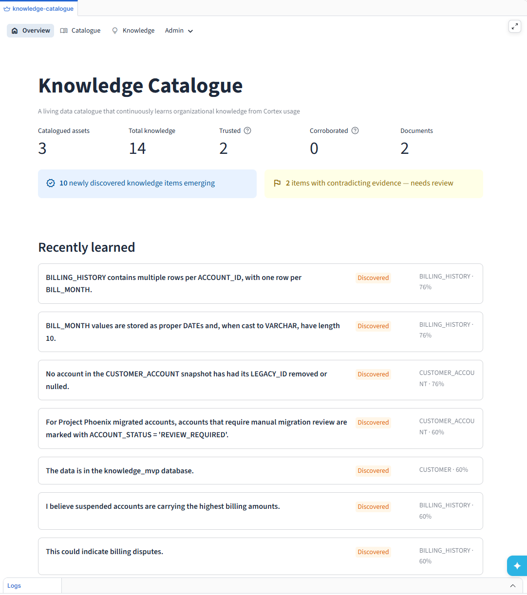
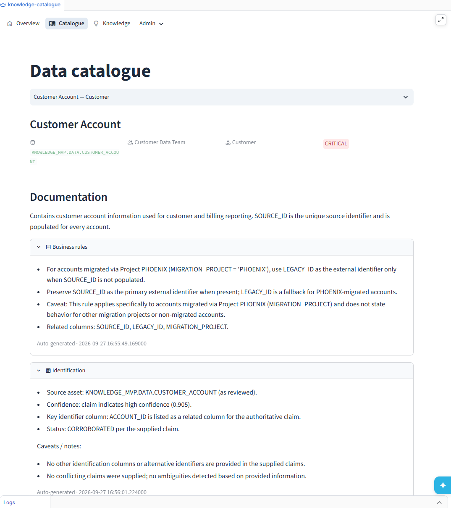
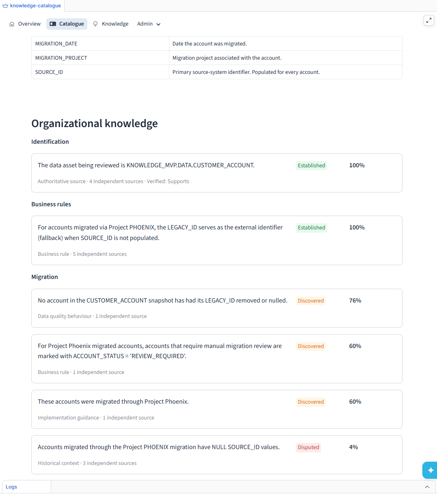

Discover
Identify durable knowledge emerging from real investigations.
Cognaidus turns knowledge discovered during Snowflake AI-assisted investigations into trusted, reusable organizational context — so every investigation can start with what your organization already knows.
An engineer solves a real data problem.

Returned to the next relevant investigation.
Cortex can help an engineer spend hours uncovering business rules, caveats and important context. When the conversation ends, much of that knowledge disappears — and the next engineer or AI agent starts over.
Cognaidus learns from real AI-assisted work, then applies a trust lifecycle before that knowledge is reused.
Identify durable knowledge emerging from real investigations.
Connect claims to the assets, SQL and evidence behind them.
Reconcile new discoveries with existing organizational knowledge.
Return established context to future humans and AI agents.
Cognaidus continuously turns real Cortex investigations into a living knowledge layer around your Snowflake data.

An engineer discovers special identifier behavior for accounts migrated through Project PHOENIX.
Cognaidus extracts the relationship between SOURCE_ID, LEGACY_ID and the migration context.
The rule is supported by five independent sources and becomes established knowledge.
Trusted context is available when future work touches the corresponding Snowflake asset.
For accounts migrated via Project PHOENIX, the LEGACY_ID serves as the external identifier (fallback) when SOURCE_ID is not populated.
Cognaidus preserves the difference between something AI noticed and something the organization should rely on.

Knowledge isn't generated only from metadata or usage patterns. It comes from the real business rules, caveats and relationships uncovered during investigations.


Cognaidus is designed to make each relevant Snowflake investigation better informed by what previous investigations established.
Schema, lineage and ownership matter. Cognaidus adds the hard-won business rules, caveats, evidence and conclusions discovered while people actually use the data.
See the working Cognaidus knowledge loop in action.
Request a demo cognaidus@gmail.com